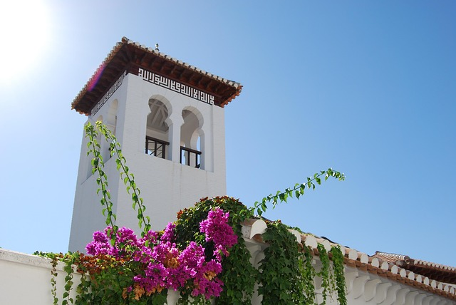
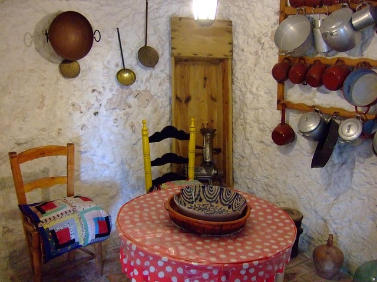
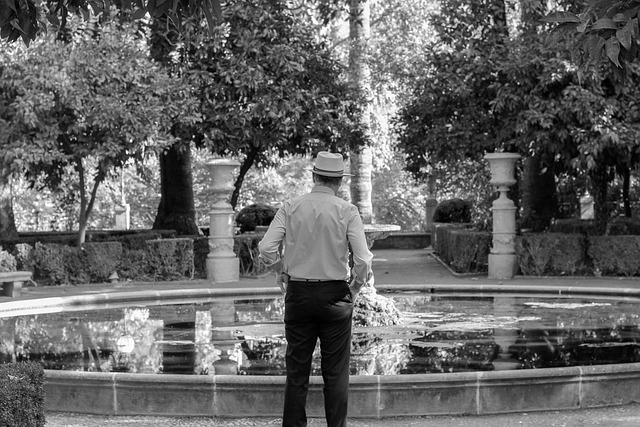
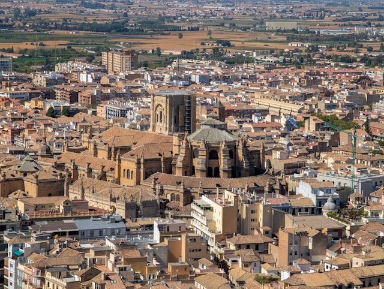
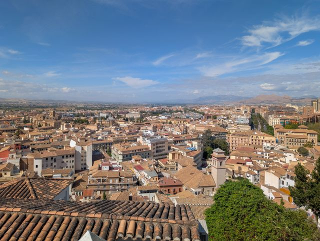
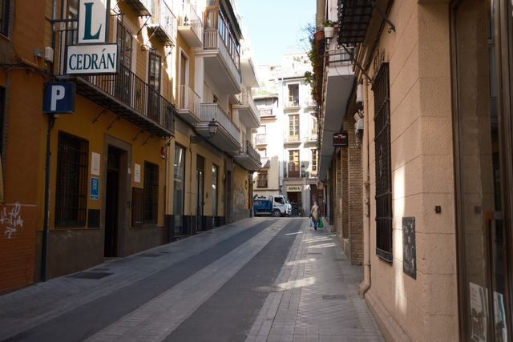
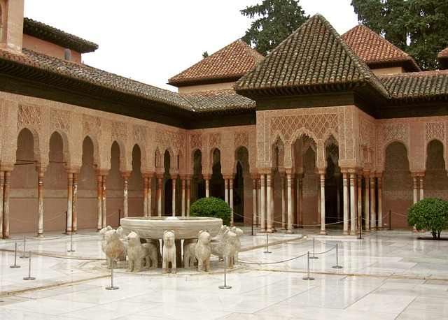
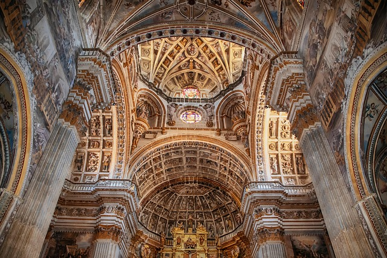
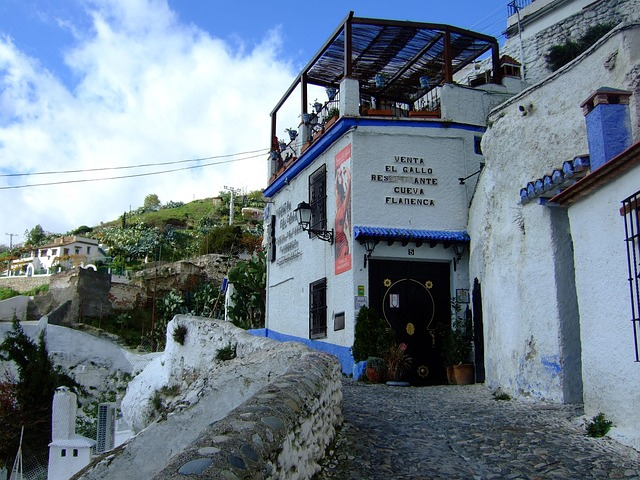

Distritos
Albaicín

Este barrio, declarado Patrimonio de la Humanidad por la UNESCO, es el testimonio vivo del esplendor andalusí en la ciudad. Sus calles estrechas, empinadas y laberánticas invitan a perderse entre fachadas encaladas, antiguos aljibes y los tradicionales cármenes (casas con huerto y jardín ocultos tras altos muros). Además de albergar las vistas más icónicas de la Alhambra desde sus concurridos miradores, como el de San Nicolás, el Albaicín conserva la esencia de una época donde el agua, la arquitectura íntima y los callejones empedrados marcaban el ritmo de la vida.
Sacromonte

Esculpido sobre el agreste valle del río Darro y frente a los muros de la Alhambra, este singular barrio es el epicentro del misticismo y la cultura gitana de Granada. Su paisaje está completamente definido por las famosas casas-cueva, viviendas excavadas directamente en la roca de la montaña que ofrecen una arquitectura orgánica única en el mundo. El Sacromonte es sinónimo de duende: en sus tradicionales zambras nació un estilo propio de cante y baile que aún resuena cada noche. Coronando el paisaje se alza la majestuosa Abadía del Sacromonte, un centro espiritual que custodia los orígenes históricos de la ciudad.
Realejo

Conocido antiguamente como Garnata al-Yahud (la Granada de los judíos), el Realejo es un barrio vibrante con una identidad propia arrolladora que se despliega a los pies de la Alhambra. Sus calles forman un mosaico fascinante donde la historia se respira en lugares emblemáticos como el Campo del Príncipe —una plaza señorial presidida por el Cristo de los Favores— o la majestuosa Iglesia de Santo Domingo. En las últimas décadas, el barrio ha sumado a su rico legado sefardí y renacentista una vibrante atmósfera bohemia, convirtiéndose en un lienzo vivo de arte urbano gracias a los famosos grafitis del artista local "El Niño de las Pinturas", y en un punto de encuentro imprescindible para disfrutar del tapeo a la sombra de sus terrazas.
Centro

Representa el corazón neurálgico y monumental del triunfo de los Reyes Católicos en la ciudad. Dominado por la majestuosa silueta de la Catedral de Granada y la adyacente Capilla Real —lugar de sepultura de dichos monarcas—, este distrito fusiona la fastuosidad del Renacimiento con vestigios islámicos como el pintoresco zoco de la Alcaicería. El distrito abarca también el histórico barrio del Realejo, la antigua judería de la ciudad, convirtiéndose en una zona vibrante donde la rica arquitectura señorial convive con plazas llenas de terrazas y tabernas perfectas para el tapeo.
Zaidín

Situado al sur del núcleo histórico, el Zaidín es el ejemplo perfecto de la expansión moderna y de la enérgica vida comunitaria de Granada. Con un marcado carácter joven, universitario y obrero, este distrito ha sabido ganarse su propio hueco en la identidad cultural granadina gracias a eventos de gran proyección, destacando su célebre festival de rock gratuito, uno de los más antiguos de Europa. Lejos del turismo de masas, ofrece una inmersión auténtica en el día a día local, repleto de amplias avenidas, comercios de barrio y una rica oferta gastronómica a precios populares.
Chana

Ubicado en la zona noroeste, la Chana es sinónimo de hospitalidad, ambiente universitario y, por encima de todo, la indiscutible capital del tapeo en Granada. Sus calles rebosan de vida gracias a una densa red de bares populares que compiten amistosamente por servir las tapas más generosas y sabrosas de la ciudad con cada consumición. Es un distrito obrero y dinámico que refleja la autenticidad de la vida cotidiana granadina, ofreciendo una parada cultural indispensable para cualquier viajero que desee saborear la auténtica hospitalidad y la cultura culinaria callejera de la región.
Rutas culturales

Ruta de la Granada Nazarí: El ocaso de un imperio.
El ocaso de un imperio.Este itinerario sumerge al visitante en el esplendor del último reino musulmán de la península ibérica. El recorrido comienza en el fastuoso conjunto monumental de la Alhambra y el Generalife, desciende por el romántico Paseo de los Tristes y se adentra en el laberinto de calles del Albaicín, descubriendo antiguos aljibes, baños árabes (como El Bañuelo) y el Palacio de Dar al-Horra.

Ruta de la Granada Monumental e Imperial: El renacimiento cristiano.
Un recorrido enfocado en la transformación radical que sufrió la ciudad tras la toma de los Reyes Católicos en 1492. La ruta tiene como ejes principales la majestuosa Catedral de Granada —obra cumbre del Renacimiento español—, la adyacente Capilla Real (donde descansan los restos de los Reyes Católicos), el Monasterio de San Jerónimo y los palacios señoriales del barrio del Realejo.

Ruta del Duende y la Tradición: Sacromonte y el flamenco.
Una travesía que conecta el paisaje natural con la identidad gitana y artística de la ciudad. El camino asciende hacia el singular barrio del Sacromonte, famoso por sus viviendas excavadas en la roca (casas-cueva), y visita lugares clave como la Abadía del Sacromonte y el Centro de Interpretación del barrio, culminando al anochecer en una tradicional zambra para vivir el flamenco puro en directo.